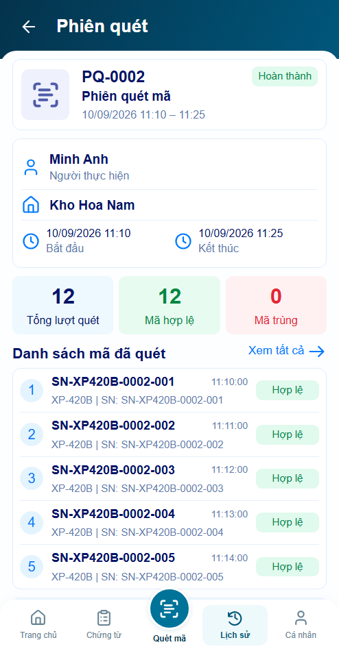
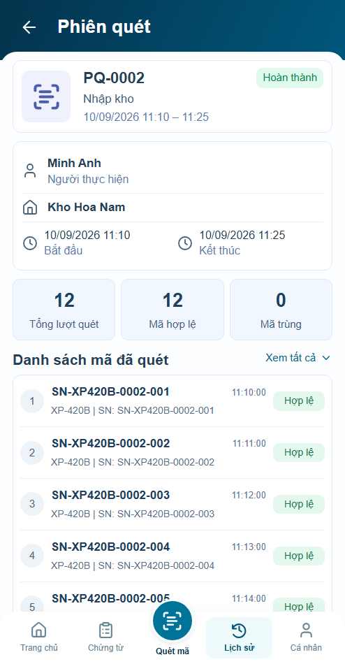
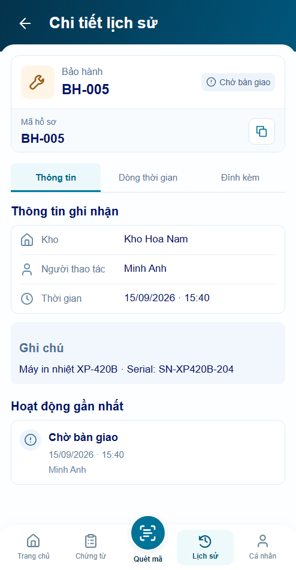
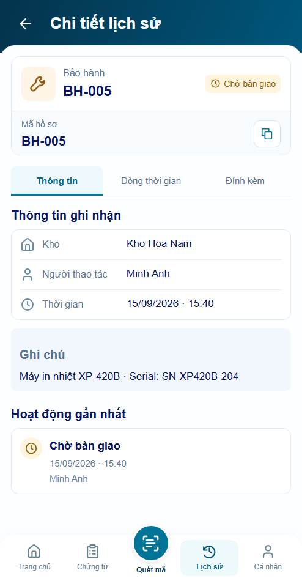

Lịch sử r23 — sửa lỗi sau rà soát
Giữ footer và mẫu icon đã chốt. Sửa tên loại phiên, màu trạng thái, vị trí đọc khi mở rộng, bố cục mã/giờ, điều hướng lịch bằng bàn phím và phản hồi sao chép cũ.
Mở app · Báo cáo và giới hạn kiểm chứng
Phiên quét — cùng494×1000
Trước: tên loại cố định, số0 đỏ, màu/icon cũ
Sau: đúng loại, màu dịu, mã và thời gian rõ ràng
Chờ bàn giao — trạng thái có nghĩa rõ ràng
Trước: mappingunknown
Sau: màu chờ và icon thời gian, chưa hoàn tất
Dialog và lịch
Bố cục mới chờ bạn review; kiểm thử không thay thế nghiệm thu hình thức.